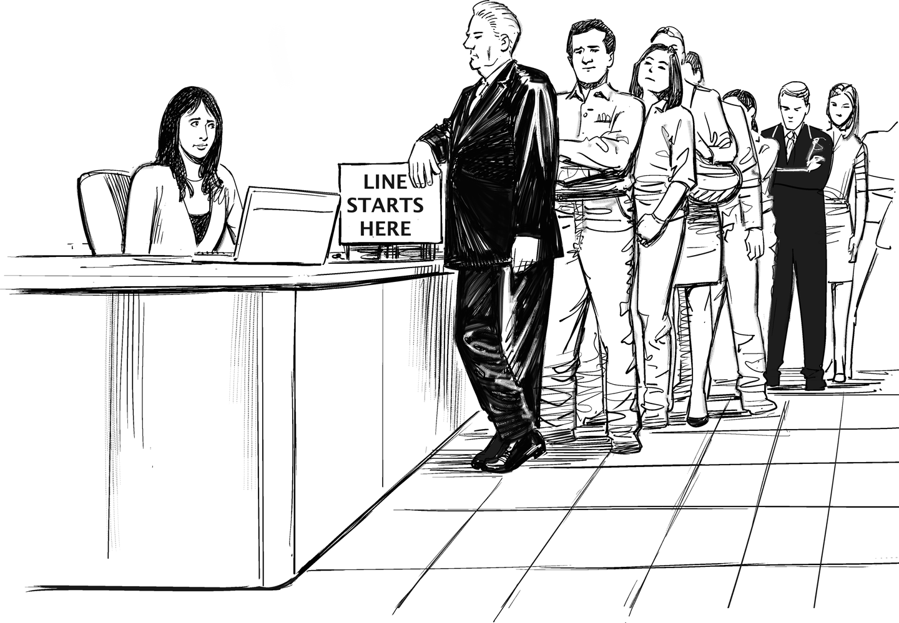

Good Things Don’t Come to Those Who Wait

When in university, we often wonder whether and how what we learn will help us in our future careers and lives. While I am still waiting for the Ackerman function to accelerate my professional advancement (our first semester in computer science blessed us with a lecture on computability), the class on queuing theory was actually helpful: not only can you talk to the people in front of you in the supermarket checkout line about M/M/1 systems and the benefits of single queue, multiple servers systems (which most supermarkets don’t use), but it also gives you an important foundation to reason about economies of speed (Chapter 35).
When looking to speed things up in enterprises, most people look at how work is done: are all machines and people utilized, and are they working efficiently? Ironically, when looking for speed, you mustn’t look at the activities, but between them. By looking at activities you may find inefficient activity, but between the activities is where you find inactivity, things sitting around and waiting to be worked on.
Inactivity can have a much more detrimental effect on speed than inefficient activity. If a machine is working well and almost 100% utilized but a widget must wait three months to be processed by that machine, you may have replicated the public healthcare system, which is guided by efficiency but certainly not speed. Many statistics show that wait times in typical IT processes, such as ordering a server, make up more than 90% of the total elapsed time. Instead of working more, we should wait less!
When you look between activities, you are bound to find queues, just like the lines at your local department of motor vehicles or city office. To better understand how they work and what they do to a system, let’s indulge in a bit of queuing theory. My university textbook on queuing theory, Kleinrock’s Queuing Systems,1 appears to be out of print, but is available used. But don’t worry, you don’t need to digest 400 pages of queuing theory to understand enterprise transformation.
My university professor reminded us that if we remember only one thing from his class, it should be Little’s Result. This equation states that in a stable system, the total processing time T, which includes wait time, is equal to N, the number of items in the system (the ones in the queue plus the ones being processed) divided by the processing rate λ; in short . This makes intuitive sense: the longer the queue, the longer it takes for new items to be processed. If you are processing two items per second and there are 10 items on average in the systems, a newly arriving item will spend five seconds in the system. You might correctly deduce that most of those five seconds are spent in the queue, not actually processing the item. The noteworthy aspect of Little’s result is that the relationship holds for most arrival and departure distributions.
To build a bridge between speed and efficiency, let’s look at the relationship between utilization and wait time. The system is utilized whenever an item is being processed, meaning one or more items are in the system. If you sum up the probability that a given number of items are in the system, for instance, 0 items (the system is idle), 1 (one item being processed), 2 (one item being processed plus one in the queue), etc., you find that the average number of items in the system is equal to ρ / (1 – ρ), where ρ designates the utilization rate, or the fraction of time the server is busy (we make the assumption that arrivals are independent, which is described as a memoryless system). From the equation you can quickly gather that high levels of utilization (ρ moving closer to 100%) lead to extreme queue sizes and therefore wait times. Increasing utilization from 60% to 80% almost triples the average queue length: 0.6/(1 – 0.6) = 1.5 versus 0.8/(1 – 0.8) = 4. Driving up utilization will drive away your customers because they get tired of standing in line!
Queuing theory proves that driving up utilization increases processing times: if you live in a world in which speed counts, you have to stop chasing task efficiency. Instead, you need to look at your queues. Sometimes these queues are visible like the lines at government offices where you take a number and wonder whether you’ll be served before closing time. In corporate IT the queues are generally less visible—that’s why so little attention is paid to them. By looking a little harder, though, you can find them almost everywhere:
When everyone’s calendar is 90% “utilized,” important decisions queue for people to meet and discuss them. I waited for meetings with senior executives for multiple months.
Such regular meetings tend to occur once every month or quarter. Topics will be queued up for them, again holding up decisions or project progress.
Inboxes fill up with items that would take you a mere three minutes to take care of, but that you don’t get to for several days because you are highly “utilized” in meetings all day. Stuff often rots in my inbox queue for weeks.
Code that is written and tested but waiting for a release is sitting in a queue, sometimes for six months.
Many processes ranging from getting an invoice paid to requesting a raise for employees, have excessive wait times built in. For example, ordering a book takes large companies multiple weeks, as opposed to having it delivered the next day from Amazon.
To get a feeling for the damage done by queues, consider that ordering a server often takes four weeks or more. The infrastructure team won’t actually bend metal to build a brand-new server just for you: most servers are provisioned as VMs these days (thanks to software eating the world Chapter 14). If you reasonably assume that there are four hours of actual work in setting up a server consisting of assigning an IP address, loading an operating system image, and doing some nonautomated installations and configurations, the time spent in the queue makes up 99.4% of the total time! That’s why we should look at the queues. Reducing the four hours of effort to two won’t make any difference unless you reduce the wait times.
Standing in line is hardly productive, but occasionally entertaining. When waiting in line at the San Francisco Marina post office I observed the highly utilized and actually quite friendly postal workers. To give myself a bit of utilization I stepped over to grab Priority Mail envelopes for my next urgent mailing (back then I didn’t know what cool things the Graffiti Research Lab guys made from postal supplies). When returning to my spot in the line, the guy behind me complained and after a brief argument he claimed, “You are out of line.” I think the irony of his statement escaped him as I was the only one who was amused.
Digital companies understand the danger of queues quite well. The infamously tasty and free Google cafés have signs posted stating that “Cutting the line is encouraged.” Google doesn’t like to bear the opportunity cost of 20 people politely waiting behind a person who transports salad leaves to their plate one by one.
“You can’t manage what you can’t measure,” goes the old saying, apparently falsely attributed to W. Edwards Deming. In the case of queues, making them visible can be a major step toward managing them. For example, metrics extracted from the ticketing system can show the time spent in each step or the ratio of effort over elapsed time (you will be shocked!). Showing that most time is simply spent waiting could also help the organization think in new dimensions (Chapter 40); for example, to realize that more elapsed time doesn’t equate to higher quality.
For critical business processes such as insurance claims handling, queue metrics are often managed under the umbrella of business activity monitoring (BAM). Corporate IT should use BAM to measure its own business, such as provisioning software and hardware, and reduce lag times. Slow IT these days means slow business.
Why are single queue, multiple server systems more efficient and why don’t more supermarkets use them? Lining customers up in a single queue reduces the chances that a server (i.e., cashier) is idling due to an uneven distribution of customers across the queues. It also allows smooth increases or reduction in the number of cashiers without everyone running to the newly opened lane or being ticked off at a lane closing. Most important, it eliminates the frustration that the other line is always moving faster! However, a single queue requires a bit more floor space and a single entry point for customers. You will see single queue, multiple server systems in many post offices and some large electronic stores like Fry’s Electronics. Apparently, they understand queuing theory!
So how can the coauthor of a book on asynchronous message queues conclude that queues are trouble? Queues are a great tool for building high throughput and resilient systems. They buffer load spikes to allow resources to work at optimum rates. Just imagine each person who wants to check out of the supermarket just piling their items onto the checkout counter the moment they reach it. Hardly a useful scenario. Many businesses, such as Starbucks, use queues (Chapter 17) to optimize throughput.
Queues become troublesome when they get long due to excessive utilization rates. High utilization and short response times don’t mix. Don’t blame the queue for it.
1 Leonard Kleinrock, Queueing Systems. Volume 1: Theory (New York: Wiley-Interscience, 1975).